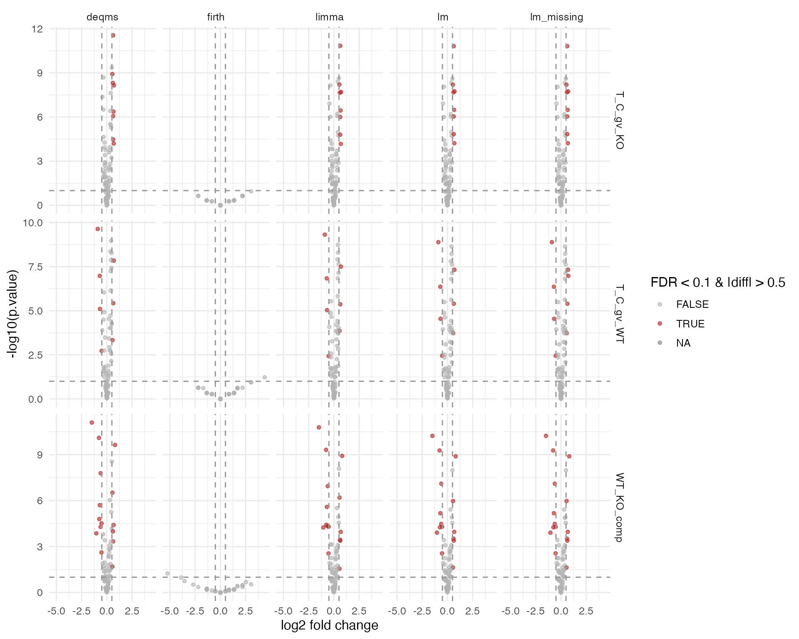
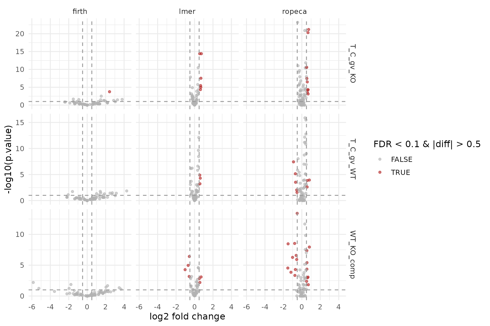

Contrast Facades with Two-Factor Subgroup Design
Witold E. Wolski
2026-03-24
Source:vignettes/ContrastFacade2Factor.Rmd
ContrastFacade2Factor.RmdPurpose
This vignette demonstrates the same
build_contrast_analysis() facade workflow on a dataset with
two factors (e.g. treatment and genotype), yielding four subgroups:
C_WT, T_WT, C_KO,
T_KO. We define contrasts:
T_C_gv_WT = T_WT - C_WTT_C_gv_KO = T_KO - C_KOWT_KO_comp = T_C_gv_WT - T_C_gv_KO
We start from simulated two-factor peptide data, derive a single
subgroup factor, and run both protein-input and peptide-input facades
with the same contrast specification. See
ContrastFacades.Rmd for the one-factor introduction.
Simulate two-factor data and encode subgroups
dd <- sim_lfq_data_2Factor_config(
Nprot = 80,
with_missing = TRUE,
weight_missing = 1,
PEPTIDE = TRUE,
seed = 7
)
cfg_subgroup <- dd$config$clone(deep = TRUE)
data_subgroup <- dd$data |>
dplyr::mutate(
Condition = dplyr::recode(Treatment, A = "C", B = "T"),
Genotype = dplyr::recode(Background, Z = "WT", X = "KO"),
Subgroup = paste(Condition, Genotype, sep = "_")
)
cfg_subgroup$factors <- c(Subgroup = "Subgroup")
cfg_subgroup$factorDepth <- 1
lfq_peptide_2f <- LFQData$new(data_subgroup, cfg_subgroup)
lfq_peptide_2f <- lfq_peptide_2f$get_Transformer()$log2()$lfq
lfq_protein_2f <- LFQDataAggregator$new(lfq_peptide_2f, "protein")$medpolish()
contrasts_2f <- c(
T_C_gv_WT = "SubgroupT_WT - SubgroupC_WT",
T_C_gv_KO = "SubgroupT_KO - SubgroupC_KO",
WT_KO_comp = "T_C_gv_WT - T_C_gv_KO"
)Protein-input facades
fa_lm_2f <- build_contrast_analysis(
lfq_protein_2f,
"~ Subgroup",
contrasts_2f,
method = "lm"
)
fa_limma_2f <- build_contrast_analysis(
lfq_protein_2f,
"~ Subgroup",
contrasts_2f,
method = "limma"
)
fa_lm_missing_2f <- build_contrast_analysis(
lfq_protein_2f,
"~ Subgroup",
contrasts_2f,
method = "lm_missing"
)
fa_deqms_2f <- build_contrast_analysis(
lfq_protein_2f,
"~ Subgroup",
contrasts_2f,
method = "deqms"
)
fa_firth_protein_2f <- build_contrast_analysis(
lfq_protein_2f,
"~ Subgroup",
contrasts_2f,
method = "firth"
)
results_protein_2f <- bind_rows(
fa_lm_2f$get_contrasts(),
fa_limma_2f$get_contrasts(),
fa_lm_missing_2f$get_contrasts(),
fa_deqms_2f$get_contrasts(),
fa_firth_protein_2f$get_contrasts()
)
results_protein_2f |>
dplyr::count(facade, contrast, name = "n_results")## # A tibble: 15 × 3
## facade contrast n_results
## <chr> <chr> <int>
## 1 deqms T_C_gv_KO 79
## 2 deqms T_C_gv_WT 77
## 3 deqms WT_KO_comp 76
## 4 firth T_C_gv_KO 80
## 5 firth T_C_gv_WT 80
## 6 firth WT_KO_comp 80
## 7 limma T_C_gv_KO 79
## 8 limma T_C_gv_WT 77
## 9 limma WT_KO_comp 76
## 10 lm T_C_gv_KO 79
## 11 lm T_C_gv_WT 77
## 12 lm WT_KO_comp 76
## 13 lm_missing T_C_gv_KO 80
## 14 lm_missing T_C_gv_WT 80
## 15 lm_missing WT_KO_comp 80Peptide-input facades
fa_lmer_2f <- build_contrast_analysis(
lfq_peptide_2f,
"~ Subgroup + (1 | peptide_Id) + (1 | sampleName)",
contrasts_2f,
method = "lmer"
)
fa_ropeca_2f <- build_contrast_analysis(
lfq_peptide_2f,
"~ Subgroup",
contrasts_2f,
method = "ropeca"
)
fa_firth_peptide_2f <- build_contrast_analysis(
lfq_peptide_2f,
"~ Subgroup",
contrasts_2f,
method = "firth"
)
results_peptide_2f <- bind_rows(
fa_lmer_2f$get_contrasts(),
fa_ropeca_2f$get_contrasts(),
fa_firth_peptide_2f$get_contrasts()
)
results_peptide_2f |>
dplyr::count(facade, contrast, name = "n_results")## # A tibble: 9 × 3
## facade contrast n_results
## <chr> <chr> <int>
## 1 firth T_C_gv_KO 80
## 2 firth T_C_gv_WT 80
## 3 firth WT_KO_comp 80
## 4 lmer T_C_gv_KO 60
## 5 lmer T_C_gv_WT 60
## 6 lmer WT_KO_comp 59
## 7 ropeca T_C_gv_KO 79
## 8 ropeca T_C_gv_WT 77
## 9 ropeca WT_KO_comp 75Volcano plots
results_protein_2f <- results_protein_2f |>
dplyr::mutate(significant = FDR < 0.1 & abs(diff) > 0.5)
ggplot(results_protein_2f, aes(x = diff, y = -log10(p.value), color = significant)) +
geom_point(alpha = 0.6, size = 1.2) +
facet_grid(contrast ~ facade, scales = "free_y") +
geom_vline(xintercept = c(-0.5, 0.5), linetype = "dashed", color = "grey60") +
geom_hline(yintercept = -log10(0.1), linetype = "dashed", color = "grey60") +
scale_color_manual(values = c(`TRUE` = "firebrick", `FALSE` = "grey70")) +
labs(x = "log2 fold change", y = "-log10(p.value)", color = "FDR < 0.1 & |diff| > 0.5") +
theme_minimal(base_size = 12)
Protein-input facades, subgroup contrasts.
results_peptide_2f <- results_peptide_2f |>
dplyr::mutate(significant = FDR < 0.1 & abs(diff) > 0.5)
ggplot(results_peptide_2f, aes(x = diff, y = -log10(p.value), color = significant)) +
geom_point(alpha = 0.6, size = 1.2) +
facet_grid(contrast ~ facade, scales = "free_y") +
geom_vline(xintercept = c(-0.5, 0.5), linetype = "dashed", color = "grey60") +
geom_hline(yintercept = -log10(0.1), linetype = "dashed", color = "grey60") +
scale_color_manual(values = c(`TRUE` = "firebrick", `FALSE` = "grey70")) +
labs(x = "log2 fold change", y = "-log10(p.value)", color = "FDR < 0.1 & |diff| > 0.5") +
theme_minimal(base_size = 12)
Peptide-input facades, subgroup contrasts.